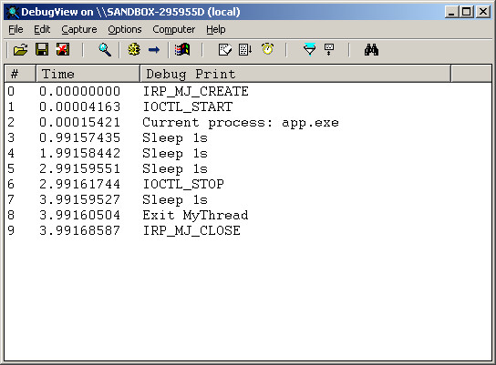

Steward
分享是一種喜悅、更是一種幸福
驅動程式 - Windows Driver Model (WDM) - 使用範例 - Assembly (ObjAsm) - Use KSystemThread
參考資訊：
https://wasm.in/
http://four-f.narod.ru/
https://github.com/steward-fu/ddk
https://www.tutorialspoint.com/user-level-threads-and-kernel-level-threads
https://mropengate.blogspot.com/2015/01/operating-system-ch4-multithread.html
main.asm
%include @Environ(OBJASM_PATH)/Code/Macros/Model.inc
SysSetup OOP, WDK_WDM, ANSI_STRING
MakeObjects Primer, KDriver, KPnpDevice, KPnpLowerDevice, KSystemThread
IOCTL_START equ CTL_CODE(FILE_DEVICE_UNKNOWN, 800h, METHOD_BUFFERED, FILE_ANY_ACCESS)
IOCTL_STOP equ CTL_CODE(FILE_DEVICE_UNKNOWN, 801h, METHOD_BUFFERED, FILE_ANY_ACCESS)
Object MyDriver, , KDriver
RedefineMethod Unload
RedefineMethod AddDevice, PDEVICE_OBJECT
RedefineMethod DriverEntry, PUNICODE_STRING
RedefineMethod DriverIrpDispatch, PIRP
ObjectEnd
Object MyDevice, , KPnpDevice
RedefineMethod Close, PKIrp
RedefineMethod Create, PKIrp
RedefineMethod DeviceControl, PKIrp
RedefineMethod Init, PDEVICE_OBJECT
RedefineMethod DefaultPnp, PKIrp
RedefineMethod DeviceIrpDispatch, PIRP
VirtualMethod ThreadHandler, POINTER
DefineVariable m_Exit, BOOLEAN, FALSE
Embed m_Thread, KSystemThread
Embed m_pMyLowerDevice, KPnpLowerDevice
ObjectEnd
DECLARE_DRIVER_CLASS MyDriver, $OfsCStr("MyDriver")
Method MyDriver.DriverEntry, uses esi, pMyRegistry : PUNICODE_STRING
mov eax, STATUS_SUCCESS
MethodEnd
Method MyDriver.AddDevice, uses esi, pPhyDevice : PDEVICE_OBJECT
New MyDevice
push eax
OCall eax::MyDevice.Init, pPhyDevice
pop eax
MethodEnd
Method MyDriver.DriverIrpDispatch, uses esi, pMyIrp : PIRP
SetObject esi
OCall DriverObject
mov eax, (DRIVER_OBJECT ptr [eax]).DeviceObject
mov eax, (DEVICE_OBJECT ptr [eax]).DeviceExtension
OCall eax::MyDevice.DeviceIrpDispatch, pMyIrp
MethodEnd
Method MyDriver.Unload, uses esi
ACall Unload
MethodEnd
Method MyDevice.Init, uses esi, pPhyDevice : PDEVICE_OBJECT
ACall Init, $OfsCStrW("\Device\MyDriver"), FILE_DEVICE_UNKNOWN, $OfsCStrW("\DosDevices\MyDriver"), 0, DO_BUFFERED_IO
SetObject esi
OCall [esi].m_pMyLowerDevice::KPnpLowerDevice.Initialize, [esi].m_pMyDevice, pPhyDevice
OCall SetLowerDevice, addr [esi].m_pMyLowerDevice
MethodEnd
Method MyDevice.DeviceIrpDispatch, uses esi, pMyIrp : PIRP
ACall DeviceIrpDispatch, pMyIrp
MethodEnd
Method MyDevice.DefaultPnp, uses esi, I : PKIrp
SetObject esi
OCall I::KIrp.ForceReuseOfCurrentStackLocationInCalldown
OCall [esi].m_pMyLowerDevice::KLowerDevice.PnpCall, I
MethodEnd
Method MyDevice.Create, uses esi, I : PKIrp
T $OfsCStr("IRP_MJ_CREATE")
OCall I::KIrp.PnpComplete, STATUS_SUCCESS, IO_NO_INCREMENT
MethodEnd
Method MyDevice.DeviceControl, uses esi, I : PKIrp
local code : DWORD
SetObject esi
OCall I::KIrp.IoctlCode
mov code, eax
.if code == IOCTL_START
T $OfsCStr("IOCTL_START")
mov [esi].m_Exit, FALSE
OCall [esi].m_Thread::KSystemThread.Start, $MethodAddr([esi]::MyDevice.ThreadHandler), pSelf, THREAD_ALL_ACCESS
.elseif code == IOCTL_STOP
T $OfsCStr("IOCTL_STOP")
mov [esi].m_Exit, TRUE
.endif
OCall I::KIrp.Information
mov dword ptr [eax], 0
OCall I::KIrp.PnpComplete, STATUS_SUCCESS, IO_NO_INCREMENT
MethodEnd
Method MyDevice.Close, uses esi, I : PKIrp
T $OfsCStr("IRP_MJ_CLOSE")
OCall I::KIrp.PnpComplete, STATUS_SUCCESS, IO_NO_INCREMENT
MethodEnd
Method MyDevice.ThreadHandler, uses esi, this : POINTER
local pStr : DWORD
local stTime : LARGE_INTEGER
or stTime.HighPart, -1
mov stTime.LowPart, -10000000
invoke IoGetCurrentProcess
add eax, 174h
mov pStr, eax
T $OfsCStr("Current process: %s"), pStr
SetObject esi
.while [esi].m_Exit == FALSE
invoke KeDelayExecutionThread, KernelMode, FALSE, addr stTime
T $OfsCStr("Sleep 1s")
.endw
T $OfsCStr("Exit MyThread")
SetObject esi
OCall [esi].m_Thread::KSystemThread.Terminate, STATUS_SUCCESS
MethodEnd
end
app.asm
.386p
.model flat, stdcall
option casemap:none
include c:\masm32\include\windows.inc
include c:\masm32\include\masm32.inc
include c:\masm32\include\user32.inc
include c:\masm32\include\msvcrt.inc
include c:\masm32\include\kernel32.inc
include c:\masm32\include\w2k\ntddkbd.inc
include c:\masm32\Macros\Strings.mac
includelib c:\masm32\lib\user32.lib
includelib c:\masm32\lib\masm32.lib
includelib c:\masm32\lib\msvcrt.lib
includelib c:\masm32\lib\kernel32.lib
IOCTL_START equ CTL_CODE(FILE_DEVICE_UNKNOWN, 800h, METHOD_BUFFERED, FILE_ANY_ACCESS)
IOCTL_STOP equ CTL_CODE(FILE_DEVICE_UNKNOWN, 801h, METHOD_BUFFERED, FILE_ANY_ACCESS)
.data?
hFile dd ?
dwRet dd ?
.code
start:
invoke CreateFile, $CTA0("\\\\.\\MyDriver"), GENERIC_READ or GENERIC_WRITE, FILE_SHARE_READ, 0, OPEN_EXISTING, FILE_ATTRIBUTE_NORMAL, 0
mov hFile, eax
invoke DeviceIoControl, hFile, IOCTL_START, NULL, 0, NULL, 0, offset dwRet, NULL
invoke Sleep, 3000
invoke DeviceIoControl, hFile, IOCTL_STOP, NULL, 0, NULL, 0, offset dwRet, NULL
invoke CloseHandle, hFile
invoke ExitProcess, 0
end start
end
完成

